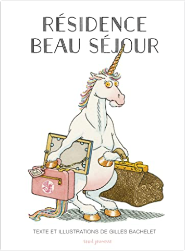

Books
Movies
Albums
Videogames
Games
BD
BD Camille
Blu-ray
Business
Camille
Comics
Cooking
Lego
Manga
Pauline
Photography
Sport
Star Wars
T'choupi
Travel
TV Shows
Un livre dont vous êtes le héro
Vinyl
Walt Disney
1
2
3
4
5
Regarde, je lis ! tome 5 : La licorne de la cabane
Éric Battut
Regarde, je lis ! tome 8 : Vive les amis !
Éric Battut
Regarde, je lis ! tome 21 : Mila et le petit cheval
Éric Battut

Résidence Beau Séjour
Gilles Bachelet
roule galette...
natha caputo, pierre belvès
Sami et Julie, champions de ski
Emmanuelle Massonaud
La Tour Eiffel se balade a Paris !
Mymi Doinet
le vilain petit canard
anne kalicky
1
2
3
4
5


 Made with Delicious Library Made with Delicious Library
Made with Delicious Library Made with Delicious Library